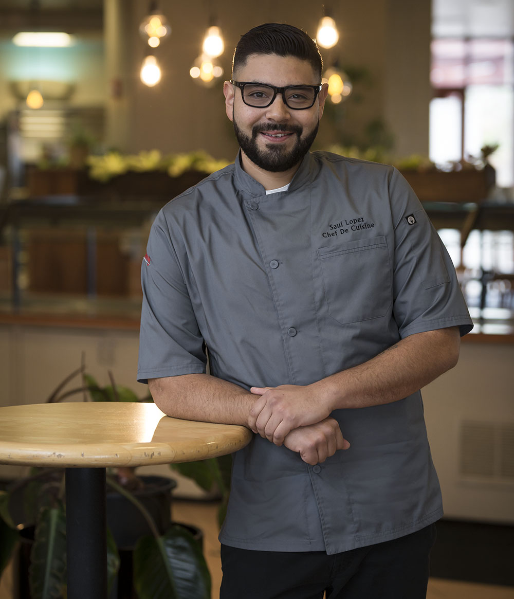

Passion for cooking is in Ed's genes. His grandmother was a successful
restaurateur in Massachusetts and Ed grew up appreciating outstanding food
and service at an early age.
Ed is influenced by the farm-to-table concept of harvesting natural
ingredients at their peak and helping them shine through the use of
classical cooking techniques. He has previously held many management
positions, including General Manager at CulinArt, overseeing food and beverages
for Qualcomm.
Ed holds the prestigious Certified Executive Chef certification from the American
Culinary Federation (ACF).He has medaled several times in ACF hot food competitions
(including gold) and was recently inducted into the prestigious Le Chaîne des
Rôtisseurs Society. Ed, classically trained in Italy's Slow Food cooking techniques,
aims to delight the campus community each day with delicious and nutritious offerings
For more contact him
Jessica Wylie is the Executive Pastry Chef of the SDSU Dining Bakeshop.
Trained in the classical style by an Austrian Master Pastry Chef, Jessica
started with SDSU Dining in 1997 as a scratch baker and quickly transformed
the bakeshop with her innovative pastry recipes.
Jessica says the highlight of her job is student satisfaction.
“I like to make people happy,” she says. “Hearing from someone that they
really enjoyed our latest croissant? That’s all I need.”
A San Diego native, Jessica has been involved in the local culinary scene
for over 25 years. Using all natural ingredients and classical methods,
Jessica is committed to bringing the best quality products to SDSU.
For more contact her

Saul started his culinary journey at 17 as a dishwasher at IHOP, worked his
way up to cook, and felt inspired to attend culinary school, where he graduated
at the top of his class. Through his work, he learned the importance of
‘mise en place’, a French culinary phrase which means ‘everything in its place’,
and dedicated himself to becoming a lifelong learner in the culinary world.
From catering work to running a restaurant, Saul has now turned his focus to
sustainability and adapting classical techniques to embrace the ‘modern kitchen’.
He helped open UTK, and is now Chef de Cuisine at The Garden. His love of healthy
living and fresh ingredients straight from our garden serves as constant inspiration
for his menu ideas and daily specials.
For more contact him